Qianli Ma
Hi there! I am a Senior Research Scientist at NVIDIA Research working on the Cosmos World Foundation Models. I obtained my PhD at the Max Planck Institute for Intelligent Systems, Tübingen and ETH Zürich, advised by Michael Black and Siyu Tang.
Selected Publications
Large Scale Diffusion Distillation via Score-Regularized Continuous-Time Consistency
Consistency distillation meets reverse-divergence regularization — scaling diffusion model distillation to 14B parameters with up to 50× faster, high-quality, and diverse sampling.
@inproceedings{zheng2026large,
title={Large Scale Diffusion Distillation via Score-Regularized Continuous-Time Consistency},
author={Zheng, Kaiwen and Wang, Yuji and Ma, Qianli and Chen, Huayu and Zhang, Jintao and Balaji, Yogesh and Chen, Jianfei and Liu, Ming-Yu and Zhu, Jun and Zhang, Qinsheng},
booktitle={International Conference on Learning Representations (ICLR)},
year={2026}
}
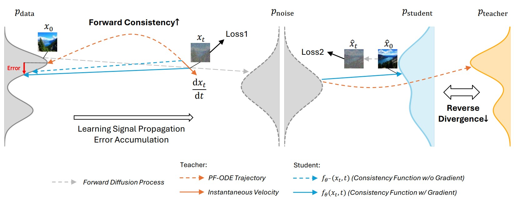
Cosmos Predict and Transfer 2.5
The Cosmos 2.5 video foundation models for high-quality visual asset generation.
@misc{nvidia2025worldsimulationvideofoundation,
title = {World Simulation with Video Foundation Models for Physical AI},
author = {NVIDIA and Ali, Arslan and Bai, Junjie and Bala, Maciej and Balaji, Yogesh and Blakeman, Aaron and Cai, Tiffany and Cao, Jiaxin and Cao, Tianshi and Cha, Elizabeth and Chao, Yu-Wei and Chattopadhyay, Prithvijit and Chen, Mike and Chen, Yongxin and Chen, Yu and Cheng, Shuai and Cui, Yin and Diamond, Jenna and Ding, Yifan and Fan, Jiaojiao and Fan, Linxi and Feng, Liang and Ferroni, Francesco and Fidler, Sanja and Fu, Xiao and Gao, Ruiyuan and Ge, Yunhao and Gu, Jinwei and Gupta, Aryaman and Gururani, Siddharth and El Hanafi, Imad and Hassani, Ali and Hao, Zekun and Huffman, Jacob and Jang, Joel and Jannaty, Pooya and Kautz, Jan and Lam, Grace and Li, Xuan and Li, Zhaoshuo and Liao, Maosheng and Lin, Chen-Hsuan and Lin, Tsung-Yi and Lin, Yen-Chen and Ling, Huan and Liu, Ming-Yu and Liu, Xian and Lu, Yifan and Luo, Alice and Ma, Qianli and Mao, Hanzi and Mo, Kaichun and Nah, Seungjun and Narang, Yashraj and Panaskar, Abhijeet and Pavao, Lindsey and Pham, Trung and Ramezanali, Morteza and Reda, Fitsum and Reed, Scott and Ren, Xuanchi and Shao, Haonan and Shen, Yue and Shi, Stella and Song, Shuran and Stefaniak, Bartosz and Sun, Shangkun and Tang, Shitao and Tasmeen, Sameena and Tchapmi, Lyne and Tseng, Wei-Cheng and Varghese, Jibin and Wang, Andrew Z. and Wang, Hao and Wang, Haoxiang and Wang, Heng and Wang, Ting-Chun and Wei, Fangyin and Xu, Jiashu and Yang, Dinghao and Yang, Xiaodong and Ye, Haotian and Ye, Seonghyeon and Zeng, Xiaohui and Zhang, Jing and Zhang, Qinsheng and Zheng, Kaiwen and Zhu, Andrew and Zhu, Yuke},
journal = {arXiv preprint arXiv:2511.00062},
year = {2025},
}
CoT-VLA: Visual Chain-of-Thought Reasoning for Vision-Language-Action Models
Generating subgoal images as a visual chain-of-thought process that improves the long-horizon sequential content generation fidelity.
@inproceedings{zhao2025cot,
title={CoT-VLA: Visual Chain-of-Thought Reasoning for Vision-Language-Action Models},
author={Zhao, Qingqing and Lu, Yao and Kim, Moo Jin and Fu, Zipeng and Zhang, Zhuoyang and Wu, Yecheng and Li, Zhaoshuo and Ma, Qianli and Han, Song and Finn, Chelsea and Handa, Ankur and Liu, Ming-Yu and Xiang, Donglai and Wetzstein, Gordon and Lin, Tsung-Yi},
booktitle = {IEEE/CVF Conference on Computer Vision and Pattern Recognition (CVPR)},
month = jun,
year={2025}
}
Articulated Kinematics Distillation from Video Diffusion Models
Physically plausible text-to-4D animation achieved by distilling realistic motion from video generative models onto rigged 3D characters.
@inproceedings{li2025articulated,
title={Articulated Kinematics Distillation from Video Diffusion Models},
author={Li, Xuan and Ma, Qianli and Lin, Tsung-Yi and Chen, Yongxin and Jiang, Chenfanfu and Liu, Ming-Yu and Xiang, Donglai},
booktitle = {IEEE/CVF Conference on Computer Vision and Pattern Recognition (CVPR)},
month = jun,
year={2025}
}
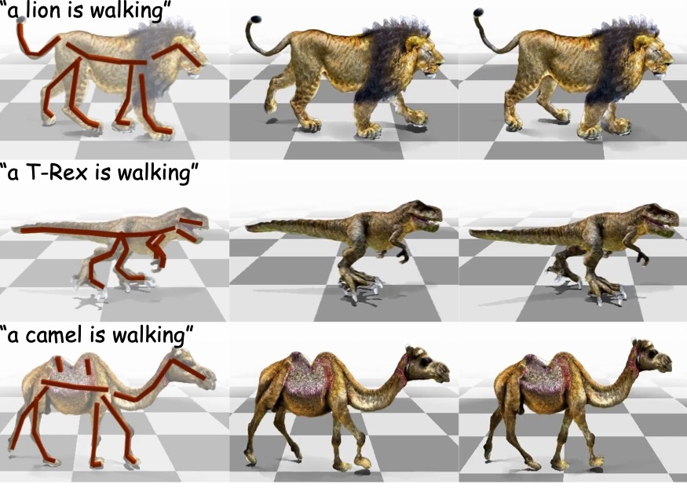
Cosmos-Transfer1: Conditional World Generation with Adaptive Multimodal Control
High-quality video synthesis with adaptive, multimodal spatial control.
@misc{nvidia2025cosmostransfer1,
title = {{Cosmos-Transfer1}: Conditional World Generation with Adaptive Multimodal Control},
author = {NVIDIA and Abu Alhaija, Hassan and Alvarez, Jose and Bala, Maciej and Cai, Tiffany and Cao, Tianshi and Cha, Liz and Chen, Joshua and Chen, Mike and Ferroni, Francesco and Fidler, Sanja and Fox, Dieter and Ge, Yunhao and Gu, Jinwei and Hassani, Ali and Isaev, Michael and Jannaty, Pooya and Lan, Shiyi and Lasser, Tobias and Ling, Huan and Liu, Ming-Yu and Liu, Xian and Lu, Yifan and Luo, Alice and Ma, Qianli and Mao, Hanzi and Ramos, Fabio and Ren, Xuanchi and Shen, Tianchang and Tang, Shitao and Wang, Ting-Chun and Wu, Jay and Xu, Jiashu and Xu, Stella and Xie, Kevin and Ye, Yuchong and Yang, Xiaodong and Zeng, Xiaohui and Zeng, Yu},
journal = {arXiv preprint arXiv:2503.14492},
year = {2025},
}
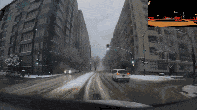
Cosmos World Foundation Model Platform for Physical AI
The first Cosmos foundation model for controllable, large-scale video generation.
@misc{nvidia2025cosmos2p5,
title = {Cosmos World Foundation Model Platform for Physical AI},
author = {NVIDIA and Agarwal, Niket and Ali, Arslan and Bala, Maciej and Balaji, Yogesh and Barker, Erik and Cai, Tiffany and Chattopadhyay, Prithvijit and Chen, Yongxin and Cui, Yin and Ding, Yifan and Dworakowski, Daniel and Fan, Jiaojiao and Fenzi, Michele and Ferroni, Francesco and Fidler, Sanja and Fox, Dieter and Ge, Songwei and Ge, Yunhao and Gu, Jinwei and Gururani, Siddharth and He, Ethan and Huang, Jiahui and Huffman, Jacob and Jannaty, Pooya and Jin, Jingyi and Kim, Seung Wook and Klár, Gergely and Lam, Grace and Lan, Shiyi and Leal-Taixe, Laura and Li, Anqi and Li, Zhaoshuo and Lin, Chen-Hsuan and Lin, Tsung-Yi and Ling, Huan and Liu, Ming-Yu and Liu, Xian and Luo, Alice and Ma, Qianli and Mao, Hanzi and Mo, Kaichun and Mousavian, Arsalan and Nah, Seungjun and Niverty, Sriharsha and Page, David and Paschalidou, Despoina and Patel, Zeeshan and Pavao, Lindsey and Ramezanali, Morteza and Reda, Fitsum and Ren, Xiaowei and Sabavat, Vasanth Rao Naik and Schmerling, Ed and Shi, Stella and Stefaniak, Bartosz and Tang, Shitao and Tchapmi, Lyne and Tredak, Przemek and Tseng, Wei-Cheng and Varghese, Jibin and Wang, Hao and Wang, Haoxiang and Wang, Heng and Wang, Ting-Chun and Wei, Fangyin and Wei, Xinyue and Wu, Jay Zhangjie and Xu, Jiashu and Yang, Wei and Yen-Chen, Lin and Zeng, Xiaohui and Zeng, Yu and Zhang, Jing and Zhang, Qinsheng and Zhang, Yuxuan and Zhao, Qingqing and Zolkowski, Artur},
journal = {arXiv preprint arXiv:2501.03575},
year = {2025},
}
Edify 3D: Scalable High-Quality 3D Asset Generation
Generating production-ready 3D assets — mesh, textures, and materials — from text or image prompts in under two minutes.
@article{nvidia2024edify3d,
title={Edify {3D}: Scalable high-quality {3D} asset generation},
author={Bala, Maciej and Cui, Yin and Ding, Yifan and Ge, Yunhao and Hao, Zekun and Hasselgren, Jon and Huffman, Jacob and Jin, Jingyi and Lewis, J. P. and Li, Zhaoshuo and Lin, Chen-Hsuan and Lin, Yen-Chen and Lin, Tsung-Yi and Liu, Ming-Yu and Luo, Alice and Ma, Qianli and Munkberg, Jacob and Shi, Stella and Wei, Fangyin and Xiang, Donglai and Xu, Jiashu and Zeng, Xiaohui and Zhang, Qinsheng},
journal={arXiv preprint arXiv:2411.07135},
year={2024}
}
Inferring Dynamics from Point Trajectories
How to infer scene dynamics from sparse point trajectory observations? Here's a simple yet effective solution using a spatiotemporal MLP with carefully designed regularizations. No need for scene-specific priors.
@inproceedings{zhang2024degrees,
title={Degrees of Freedom Matter: Inferring Dynamics from Point Trajectories},
author={Zhang, Yan and Prokudin, Sergey and Mihajlovic, Marko and Ma, Qianli and Tang, Siyu},
booktitle = {Proceedings of the IEEE/CVF Conference on Computer Vision and Pattern Recognition (CVPR)},
pages = {2018-2028},
month = jun,
year={2024}
}
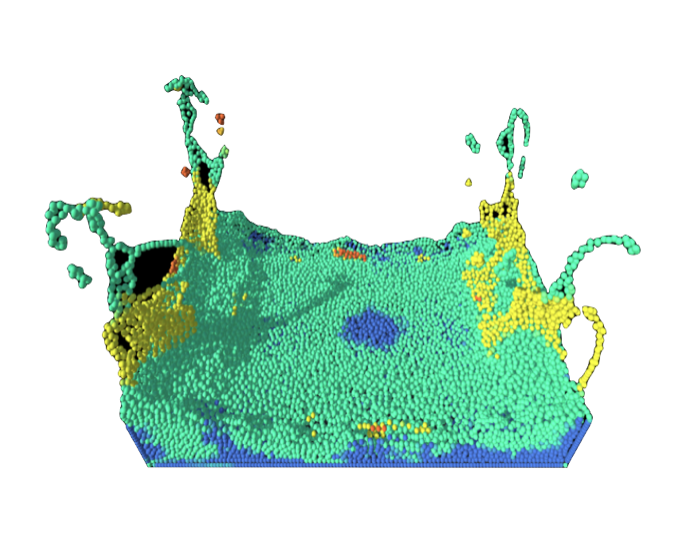
Dynamic Point Fields
Explicit point-based representation + implicit deformation field = dynamic surface models with instant inference and high quality geometry. Robust single-scan animation of challenging clothing types even under extreme poses.
@inproceedings{prokudin2023dynamic,
title={Dynamic Point Fields},
author={Prokudin, Sergey and Ma, Qianli and Raafat, Maxime and Valentin, Julien and Tang, Siyu},
booktitle = {Proceedings of the IEEE/CVF International Conference on Computer Vision (ICCV)},
pages = {7964--7976},
month = oct,
year={2023}
}
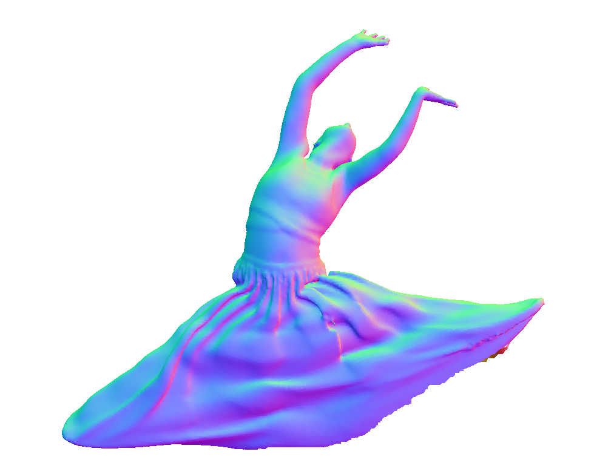
Probabilistic Human Mesh Recovery in 3D Scenes from Egocentric Views
Scene-conditioned diffusion model + collision-guided sampling = accurate character mesh recovery on observed pixels and plausible generation of unobserved parts.
@inproceedings{zhang2023egohmr,
title = {Probabilistic Human Mesh Recovery in 3D Scenes from Egocentric Views},
author = {Siwei Zhang, Qianli Ma, Yan Zhang, Sadegh Aliakbarian, Darren Cosker, Siyu Tang},
booktitle = {Proceedings of the IEEE/CVF International Conference on Computer Vision (ICCV)},
pages = {7989--8000},
month = oct,
year = {2023}
}
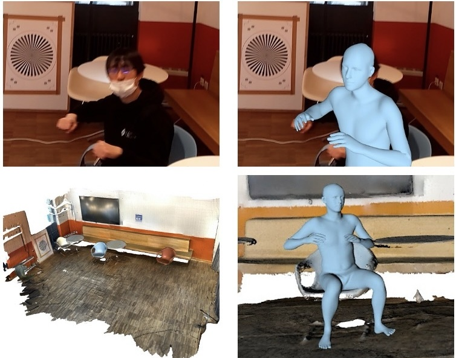
Neural Point-based Shape Modeling of Humans in Challenging Clothing
The power of point-based digital human representations further unleashed: SkiRT models dynamic shapes of 3D clothed humans including those that wear challenging outfits such as skirts and dresses.
@inproceedings{SkiRT:3DV:2022,
title = {Neural Point-based Shape Modeling of Humans in Challenging Clothing},
author = {Ma, Qianli and Yang, Jinlong and Black, Michael J. and Tang, Siyu},
booktitle = {International Conference on 3D Vision (3DV)},
pages = {679--689},
month = sep,
year = {2022}
}
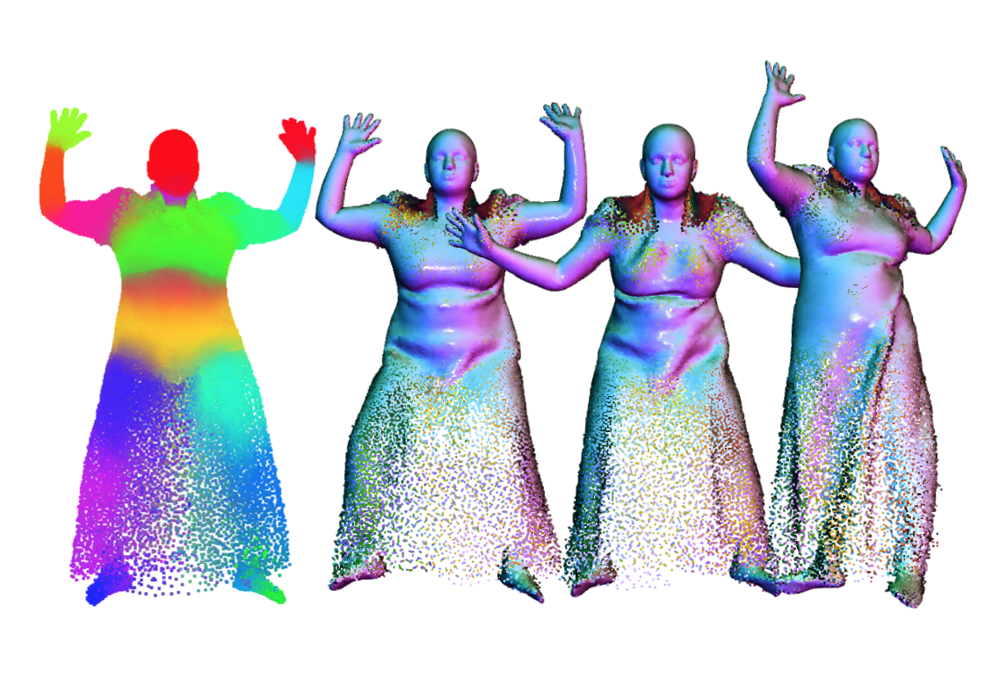
EgoBody: Human Body Shape and Motion of Interacting People from Head-Mounted Devices
A large-scale dataset of 3D human characters interacting in 3D scenes, with multi-modal visual data from both third- and first-person views.
@inproceedings{Egobody:ECCV:2022,
title = {{EgoBody}: Human Body Shape and Motion of Interacting People from Head-Mounted Devices},
author = {Zhang, Siwei and Ma, Qianli and Zhang, Yan and Qian, Zhiyin and Kwon, Taein and Pollefeys, Marc and Bogo, Federica and Tang, Siyu},
booktitle = {European Conference on Computer Vision (ECCV)},
month = oct,
year = {2022}
}
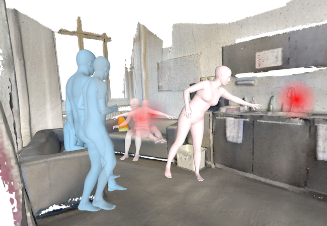
MetaAvatar: Learning Animatable Clothed Human Models from Few Depth Images
Creating an avatar of unseen subjects from as few as eight monocular depth images using a meta-learned, multi-subject, articulated, neural signed distance field model for clothed humans.
@inproceedings{MetaAvatar:NeurIPS:2021,
title = {{MetaAvatar}: Learning Animatable Clothed Human Models from Few Depth Images},
author={Wang, Shaofei and Mihajlovic, Marko and Ma, Qianli and Geiger, Andreas and Tang, Siyu},
journal={Advances in Neural Information Processing Systems},
volume={34},
pages={2810--2822},
month=dec,
year={2021}
}
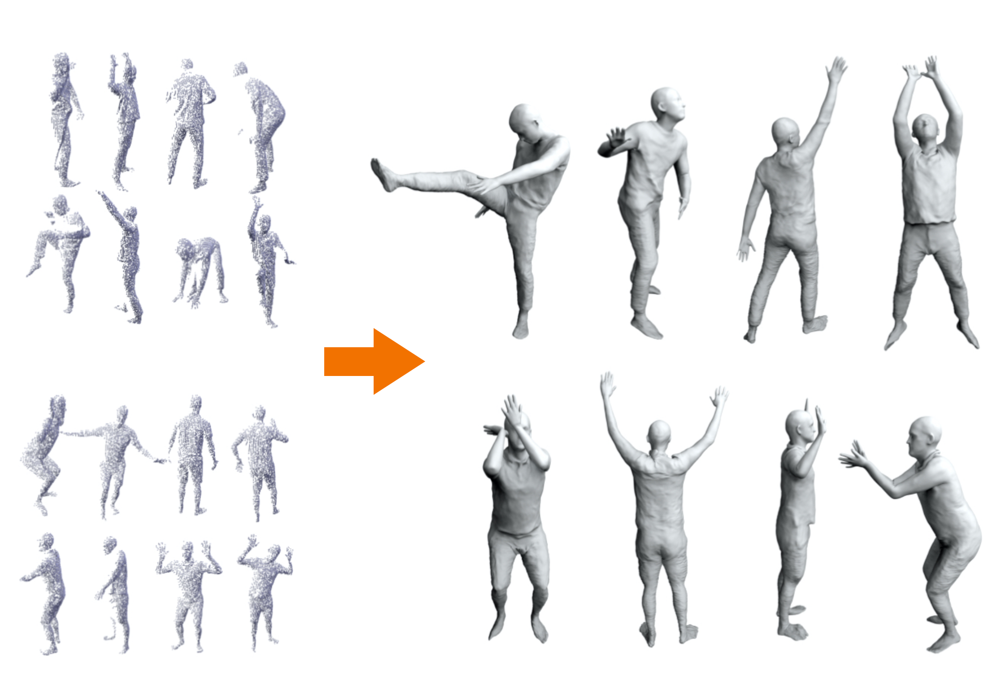
The Power of Points for Modeling Humans in Clothing
PoP — a point-based, unified model for multiple subjects and outfits that can turn a single, static 3D scan into an animatable avatar with natural pose-dependent clothing deformations.
@inproceedings{POP:ICCV:2021,
title = {The Power of Points for Modeling Humans in Clothing},
author = {Ma, Qianli and Yang, Jinlong and Tang, Siyu and Black, Michael J.},
booktitle = {Proceedings of the IEEE/CVF International Conference on Computer Vision (ICCV)},
pages = {10974--10984},
month = oct,
year = {2021},
}
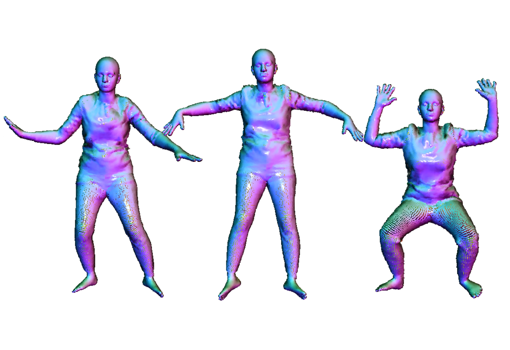
SCALE: Modeling Clothed Humans with a Surface Codec of Articulated Local Elements
Modeling pose-dependent shapes of clothed humans explicitly with hundreds of articulated surface elements: the clothing deforms naturally even in the presence of topological change.
@inproceedings{SCALE:CVPR:2021,
title = {{SCALE}: Modeling Clothed Humans with a Surface Codec of Articulated Local Elements},
author = {Ma, Qianli and Saito, Shunsuke and Yang, Jinlong and Tang, Siyu and Black, Michael J.},
booktitle = {Proceedings of the IEEE/CVF Conference on Computer Vision and Pattern Recognition (CVPR)},
pages = {16082-16093},
month = jun,
year = {2021},
}
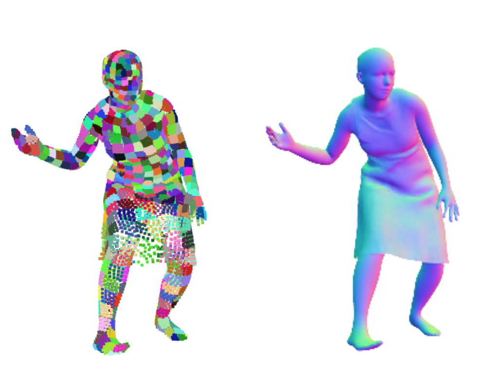
SCANimate: Weakly Supervised Learning of Skinned Clothed Avatar Networks
Cycle-consistent implicit skinning fields + locally pose-aware implicit function = a fully animatable avatar with implicit surface from raw scans without surface registration.
@inproceedings{SCANimate:CVPR:2021,
title={{SCANimate}: Weakly Supervised Learning of Skinned Clothed Avatar Networks},
author={Saito, Shunsuke and Yang, Jinlong and Ma, Qianli and Black, Michael J},
booktitle={Proceedings of the IEEE/CVF Conference on Computer Vision and Pattern Recognition (CVPR)},
pages={2886--2897},
month=jun,
year={2021}
}
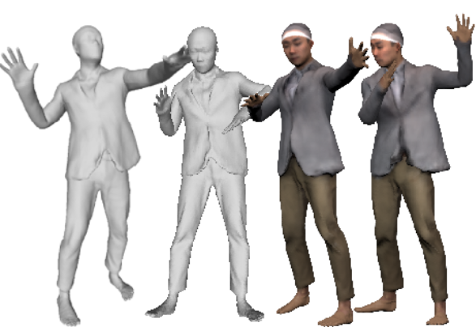
PLACE: Proximity Learning of Articulation and Contact in 3D Environments
An explicit representation for 3D person-scene contact relations that enables automated synthesis of realistic humans posed naturally in a given scene.
@inproceedings{PLACE:3DV:2020,
title = {{PLACE}: Proximity Learning of Articulation and Contact in {3D} Environments},
author = {Zhang, Siwei and Zhang, Yan and Ma, Qianli and Black, Michael J. and Tang, Siyu},
booktitle = {International Conference on 3D Vision (3DV)},
pages = {642--651},
month = nov,
year = {2020}
}

Learning to Dress 3D People in Generative Clothing
CAPE — a graph-CNN-based generative model and a large-scale dataset for 3D human meshes in clothing in varied poses and garment types.
@inproceedings{CAPE:CVPR:20,
title = {Learning to Dress {3D} People in Generative Clothing},
author = {Ma, Qianli and Yang, Jinlong and Ranjan, Anurag and Pujades, Sergi and Pons-Moll, Gerard and Tang, Siyu and Black, Michael J.},
booktitle = {Proceedings of the IEEE/CVF Conference on Computer Vision and Pattern Recognition (CVPR)},
pages={6468-6477},
month = jun,
year = {2020}
}
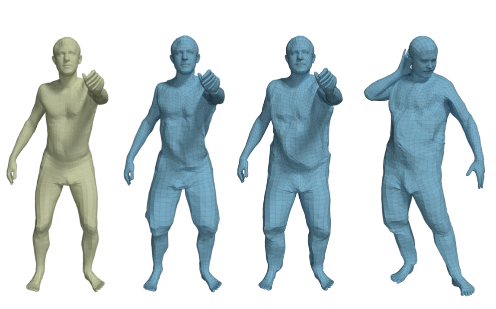